asg_taewa_3_samples: 11date: 2022-06-22 15:05:58.189318 | max: 751 min: 589 mean: 656 |
max: 6279 min: 5136 mean: 5968 |
max: 55.69 min: 51.23 mean: 52.03 |
max: 1515 min: 911 mean: 1203 | ||
| 1. test id: 2022.03.21_05-42_asg_taewa_3_54ef [raw data] | run settings: cpu=35 pods=NA treads=25 sc_min=14 warmup=90 | Duration s | qps | CPU % | Err | |
| 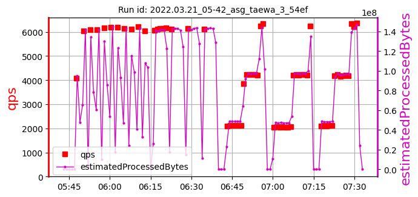 | 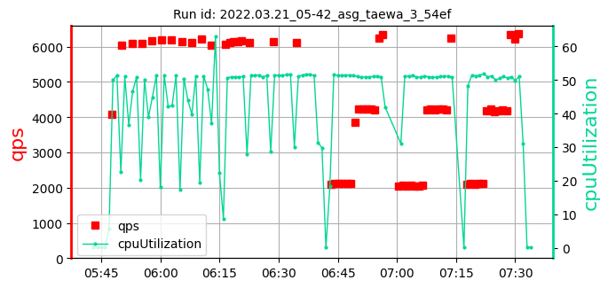 | 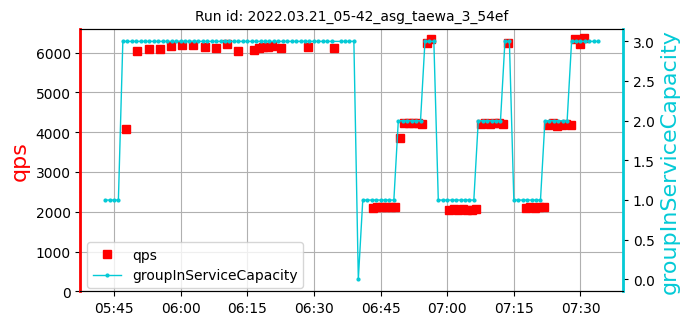 | [705, 751, 617] 691 | [6117, 6132, 6110] 6120 | [51.26, 51.45, 51.64] 51.45 | 1316 |
| 2. test id: 2022.03.24_08-16_asg_taewa_3_54ef [raw data] | run settings: cpu=35 pods=NA treads=25 sc_min=14 warmup=90 | Duration s | qps | CPU % | Err | |
| 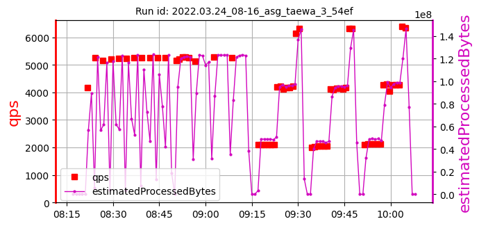 | 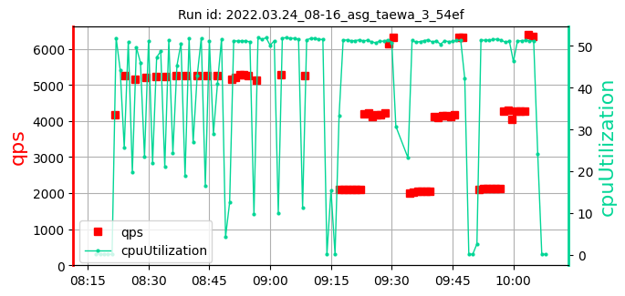 | 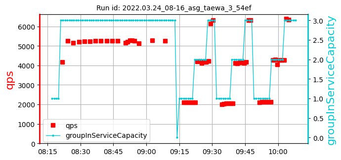 | [649, 637, 684] 657 | [5136, 5283, 5255] 5225 | [51.25, 51.89, 51.75] 51.63 | 911 |
| 3. test id: 2022.03.24_22-34_asg_taewa_3_54ef [raw data] | run settings: cpu=35 pods=NA treads=25 sc_min=14 warmup=90 | Duration s | qps | CPU % | Err | |
| 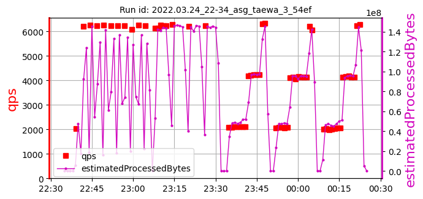 | 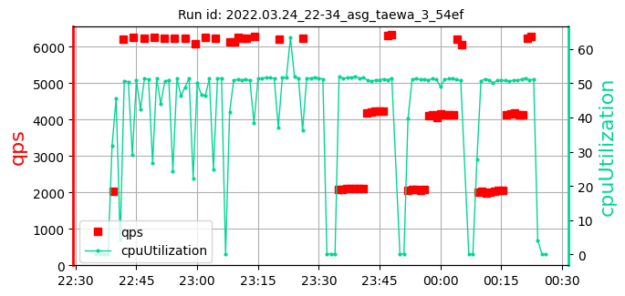 | 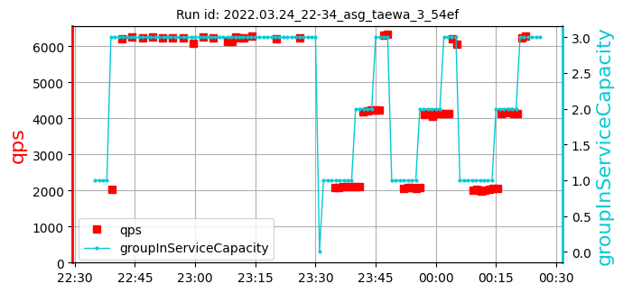 | [613, 599, 704] 638 | [6279, 6206, 6226] 6237 | [51.57, 55.61, 51.58] 52.92 | 1221 |
| 4. test id: 2022.03.25_20-08_asg_taewa_3_54ef [raw data] | run settings: cpu=35 pods=NA treads=25 sc_min=14 warmup=90 | Duration s | qps | CPU % | Err | |
| 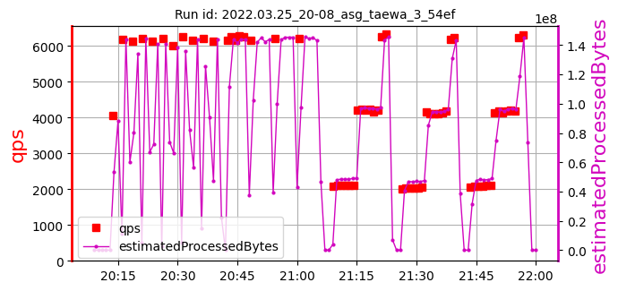 | 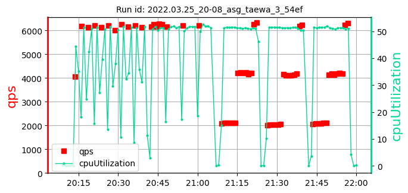 | 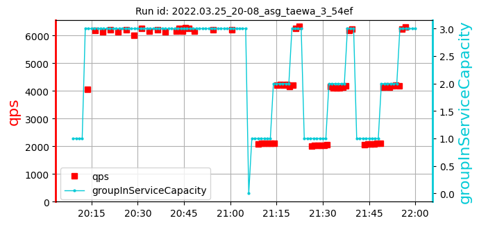 | [652, 699, 686] 679 | [6156, 6223, 6216] 6199 | [51.55, 51.53, 52.09] 51.72 | 1110 |
| 5. test id: 2022.03.29_08-43_asg_taewa_3_41cf [raw data] | run settings: cpu=35 pods=NA treads=25 sc_min=14 warmup=90 | Duration s | qps | CPU % | Err | |
| 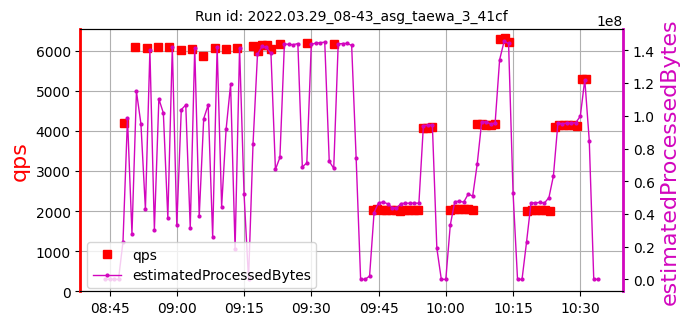 | 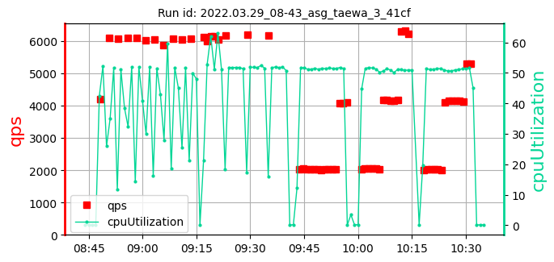 | 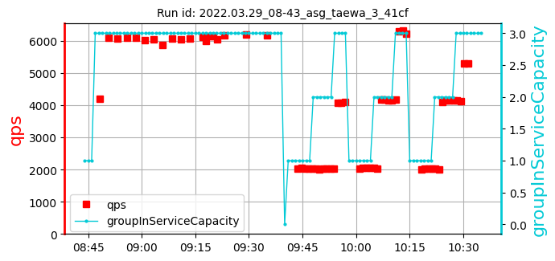 | [616, 603, 589] 603 | [6173, 6196, 6163] 6177 | [51.81, 52.05, 51.9] 51.92 | 1373 |
| 6. test id: 2022.03.30_23-07_asg_taewa_3_41cf [raw data] | run settings: cpu=35 pods=NA treads=25 sc_min=14 warmup=90 | Duration s | qps | CPU % | Err | |
| 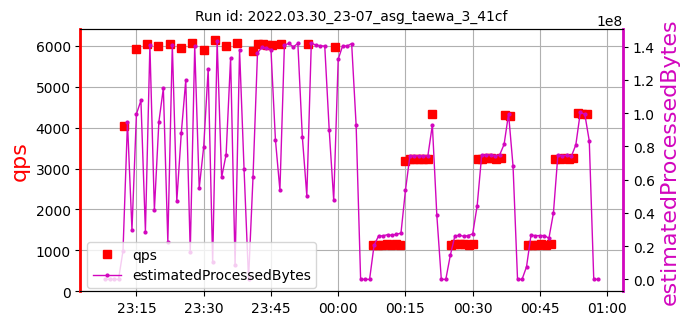 | 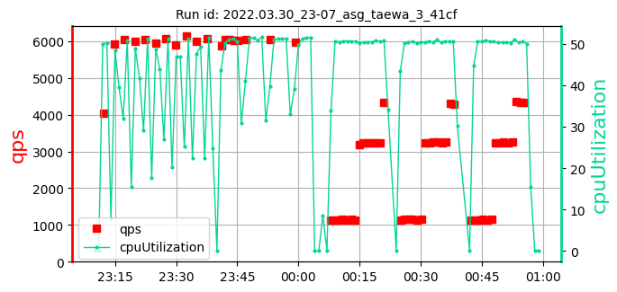 | 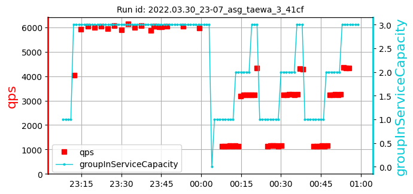 | [672, 657, 642] 657 | [6049, 6046, 5974] 6023 | [51.3, 51.23, 51.45] 51.33 | 1515 |
| 7. test id: 2022.04.05_01-03_asg_taewa_3_41cf [raw data] | run settings: cpu=35 pods=NA treads=25 sc_min=14 warmup=90 | Duration s | qps | CPU % | Err | |
| 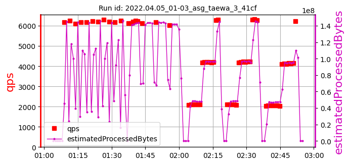 | 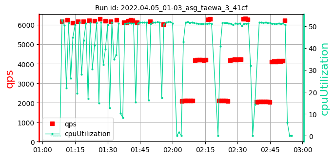 | 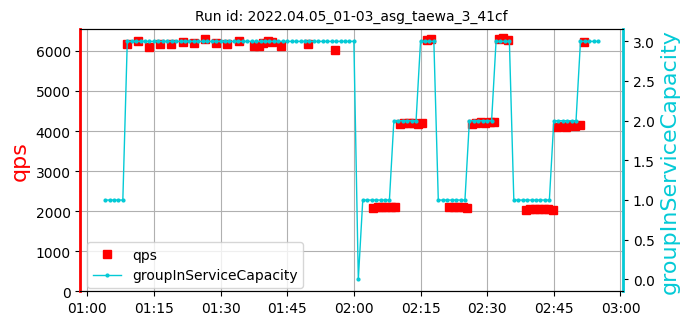 | [641, 629, 736] 669 | [6136, 6173, 6034] 6114 | [51.76, 51.82, 51.9] 51.83 | 1111 |
| 8. test id: 2022.04.17_04-55_asg_taewa_3_41cf [raw data] | run settings: cpu=35 pods=NA treads=25 sc_min=14 warmup=90 | Duration s | qps | CPU % | Err | |
| 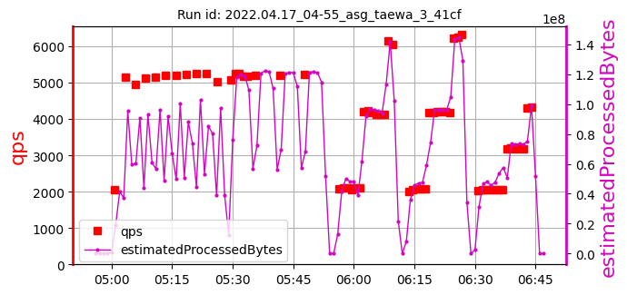 | 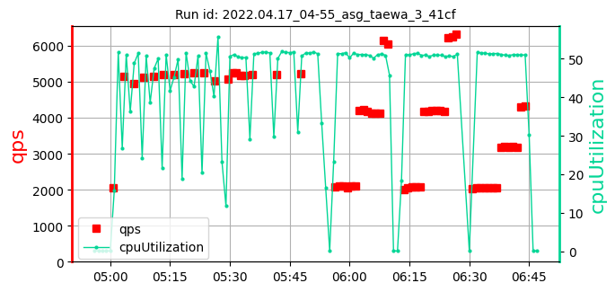 | 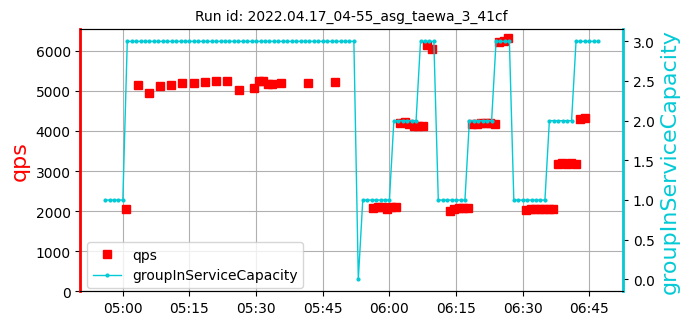 | [641, 627, 674] 647 | [5208, 5192, 5215] 5205 | [51.64, 51.72, 51.6] 51.66 | 1420 |
| 9. test id: 2022.04.20_20-56_asg_taewa_3_41cf [raw data] | run settings: cpu=35 pods=NA treads=25 sc_min=14 warmup=90 | Duration s | qps | CPU % | Err | |
| 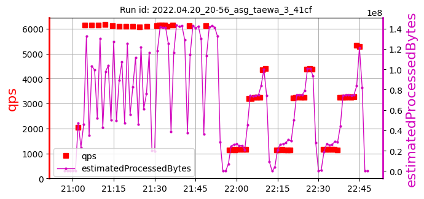 | 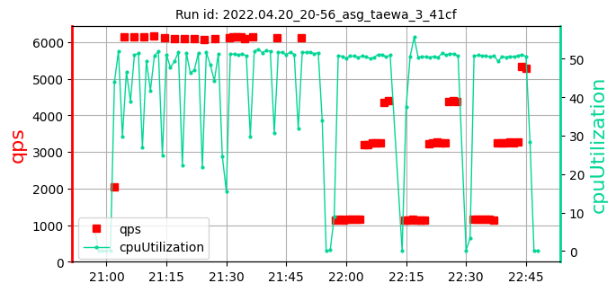 | 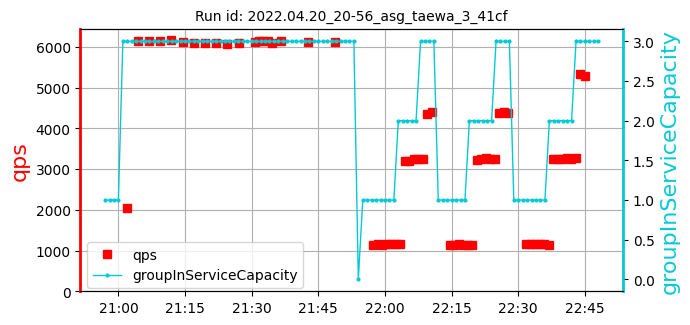 | [640, 627, 674] 647 | [6143, 6107, 6109] 6120 | [52.07, 51.49, 51.58] 51.71 | 1127 |
| 10. test id: 2022.05.11_21-49_asg_taewa_3_41cf [raw data] | run settings: cpu=35 pods=NA treads=25 sc_min=14 warmup=90 | Duration s | qps | CPU % | Err | |
| 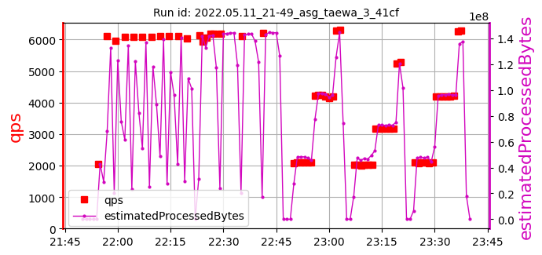 | 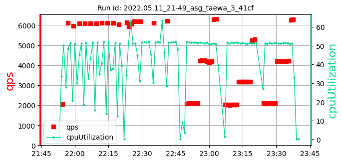 | 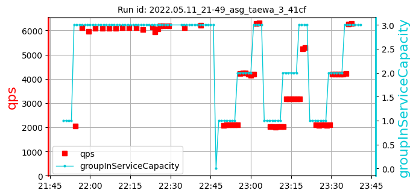 | [666, 652, 639] 652 | [6196, 6112, 6205] 6171 | [51.88, 55.69, 51.92] 53.16 | 1118 |
| 11. test id: 2022.05.12_01-37_asg_taewa_3_41cf [raw data] | run settings: cpu=35 pods=NA treads=25 sc_min=14 warmup=90 | Duration s | qps | CPU % | Err | |
| 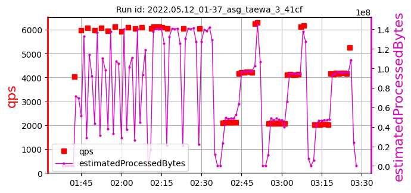 | 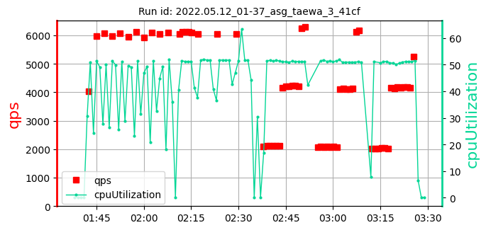 | 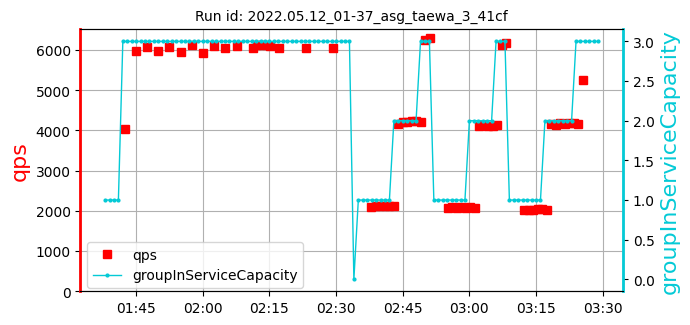 | [667, 654, 701] 674 | [6054, 6063, 6039] 6052 | [51.82, 51.72, 55.55] 53.03 | 1015 |
asg_taewa_3_samples: 11date: 2022-06-22 15:05:58.189318 | max: 751 min: 589 mean: 656 |
max: 6279 min: 5136 mean: 5968 |
max: 55.69 min: 51.23 mean: 52.03 |
max: 1515 min: 911 mean: 1203 |